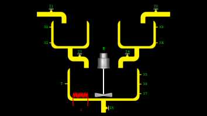

Schemat A. 
|
||||||||||||||||||||||||||||||
Obiekt ten sk³ada siê z trzech zbiorników, zaworów wlewowych Z1 i Z2 oraz z zaworów spustowych Z3, Z4, Z5. Dodatkowo w 3. zbiorniku znajduje siê mieszad³o M i grza³ka G. W zbiornikach znajduj± siê czujniki poziomów cieczy: X1, X2 (dla zbiornika nr 1), X3, X4 (dla zbiornika nr 2), X5, X6, X7 (dla zbiornika nr 3). W zbiorniku nr 3 znajduje siê czujnik temperatury T. Wszystkie zawory s± binarne (1- otwarty, 0 - zamkniêty). Równie¿ sterowanie grza³k± i mieszade³kiem jest binarne (1 - w³±czone, 0 - wy³±czone). Ramka danych wyj¶ciowych (stan obiektu).
Ramka danych wej¶ciowych (steruj±cych).
Sterowanie klawiatur±.
|
||||||||||||||||||||||||||||||